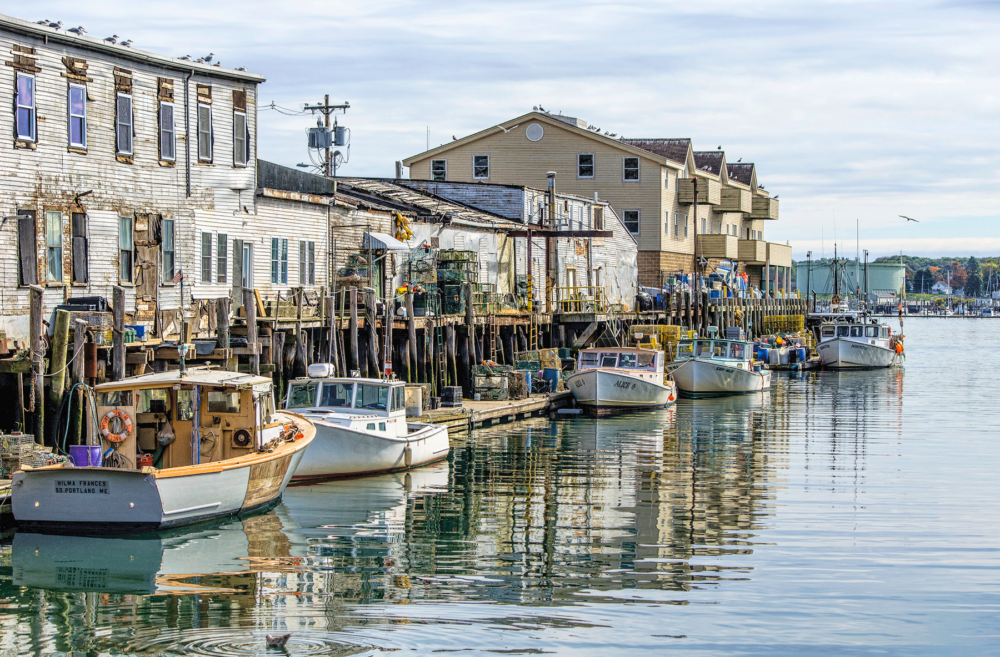

Lodging
Hampton Inn Portland Downtown-Waterfront
209 Fore Street, Portland, ME 04101Check-in tonight; walking distance to Old Port.
| Time | Activity |
|---|---|
| Evening (~9:00 PM) | Land at Portland International Jetport (or arrive by car) |
| ~9:30 PM | Pick up rental car or rideshare to downtown |
| ~10:00 PM | Check in — Hampton Inn Portland Downtown-Waterfront, 209 Fore Street |
| ~10:30 PM | Optional short Old Port walk if anyone is still awake |
| ~11:00 PM | Bed — big day tomorrow on Peaks Island |
Travel night
After a travel day, the goal is landing safely, getting keys, and resting. Portland's Old Port is steps from the hotel if you want a five-minute peek at the harbor lights — but sleep wins if the kids are done.
Lodging
Check-in tonight; walking distance to Old Port.
Optional evening
Short harbor stroll if the crew still has energy.
Tomorrow prep
Peaks Island ferry — aim for the 10:15 AM boat.



Preview Portland before tomorrow's full day downtown and on the islands.
Medical, groceries, and practical stops while based at the Hampton Inn.
Allergy & emergency
Keep this handy for allergy emergencies. Call 911 for life-threatening allergy reactions.
ER - closest to Old Port
Phone: (207) 662-0111
ER - alternate (~10-15 min)
~10-15 min drive from Old Port (not walking distance). Phone: (207) 879-3000
Grocery - nearby
~8–12 min drive. Full grocery + pharmacy.
Supermarket - nearby
Larger supermarket option.
Big-box - stock-up
Snacks, kids supplies — ~15–20 min drive.
Grocery - large
Large store near the mall — pair with Target for a big supply run.
There is no Costco in Greater Portland. For a big snack and supply run, Target + Hannaford at Maine Mall is the best one-stop option.
Pharmacy
Allergy meds / EpiPen check.
Pharmacy
Alternate CVS near Forest Ave Hannaford.
Lodging
Hotel restrooms — easiest option while based downtown.
Ferry terminal
Public restrooms at the ferry terminal.
Confirm before you go
Double-check golf cart pickup location and ferry terminal address (56 Commercial Street) before leaving the hotel tomorrow.